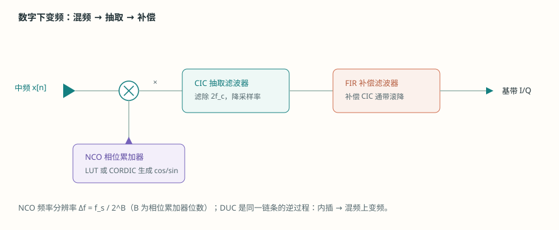
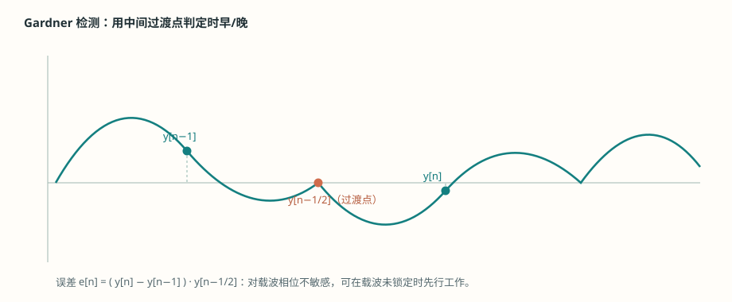
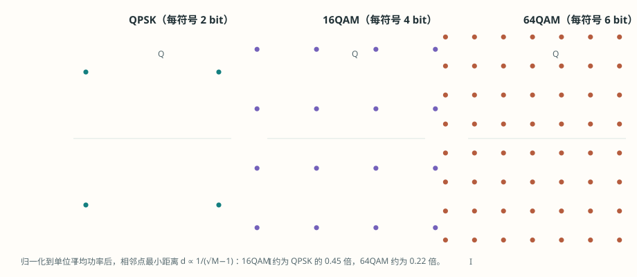

Applications · Communications / 24
通信数字信号处理：定时、载波与信道
一台数字接收机的基带链路无论多复杂，要回答的始终是三个问题：符号在哪里、载波的频率与相位是多少、信道对信号做了什么。
接收机的三个问题
从天线到解码，接收机基带链路上环环相扣的模块可以归为三类：定时——决定何时对符号做判决；载波——修正收发本振之间的频偏与相差；信道——估计并补偿多径造成的失真。
这三者互相耦合：定时需要载波粗同步为前提，载波又依赖均衡后的信号质量，信道估计则要求准确的符号定时。因此通信 DSP 的调试常常是“先让所有模块勉强工作，再逐个精调”的过程。本章按信号从变频到判决的顺序展开，并给出每个模块可复算的关键公式。
数字上下变频
数字下变频（DDC）把中频采样信号搬到基带：正交数字本振与输入相乘得到 I/Q，滤除二倍频分量后降采样率。数字上变频（DUC）是它的逆过程：内插提升采样率，再混频到中频。

NCO 由相位累加器加查表（或 CORDIC）构成。相位累加器位数 B 决定频率分辨率：
式（1）：FTW 为频率控制字，f_s 为采样率。分辨率 Δf = f_s/2^B。
因为抽取倍数通常很大，常见架构是用 CIC 滤波器（第 13 章）完成大倍数抽取，再用一个小 FIR 补偿 CIC 在通带内的滚降。定点实现时要注意相位截断杂散：只取相位累加器高位查表会引入寄生谱线，可通过加深 ROM 或用 CORDIC 实时计算来缓解。
符号同步
发射机与接收机的时钟不同源，即使标称频率相同也存在 ppm 级偏差；更重要的是，ADC 采样时刻与最佳判决时刻之间存在未知的相位偏移。定时恢复就是让接收机找到“何时判决”。
经典的早迟门（Early-Late Gate）在最佳点前后各取一个采样，用两者幅度差驱动环路，代价是需要数倍符号率的采样。更常用的 Gardner 检测器只需每符号两个采样，且对载波相位不敏感：

y[n−1/2] 的期望为零，误差 e[n] 不含码间串扰；定时偏早/偏晚时过渡点偏离零点，误差符号指示调整方向。该性质在满足第一 Nyquist 准则的脉冲（如升余弦）下成立。式（2）：y[n] 为符号判决点，y[n−1/2] 为两符号之间的过渡点。
误差信号经 PI 环路滤波后驱动一个内插器（Farrow 或 Lagrange 多项式插值），通过调整内插相位实现小于一个采样间隔的定时修正。环路带宽决定跟踪速度与抖动之间的权衡：带宽越宽，跟踪越快但抖动越大。
载波同步
收发本振之间存在频偏与相差，不修正时星座图会旋转（频偏引起匀速旋转，相差引起固定旋转），判决全部出错。载波同步就是把接收信号的相位“拉直”。
Costas 环是 BPSK/QPSK 最经典的同相-正交锁相环：I、Q 两路分别低通后，用相位误差信号驱动 NCO，锁定后把 Q 路能量驱赶到零，I 路即为判决数据。
式（3）：两式都按 I/Q 符号决定旋转方向。更高阶 QAM 常用 atan2 型误差或判决导向（DD）方式。
判决导向（Decision-Directed）恢复把星座图上的硬判决当作参考，计算判决前后的相位误差再更新 NCO。它在高信噪比下几乎没有稳态相位误差，但在低信噪比或大频偏下容易失锁；实用中通常先用扫描加 Costas 粗同步，收敛后再切到 DD 做细同步。
信道估计与均衡
多径使同一符号经不同路径到达，产生时延扩展（时域表现为码间串扰 ISI，频域表现为频率选择性衰落）。信道估计与均衡的目标是估计出信道并补偿它。
发射机在数据中插入已知导频，接收机用已知与收到的导频之比估计信道。几种常用方法：
| 方法 | 原理 | 复杂度 | 适用 |
|---|---|---|---|
| LS | 逐子载波除法 Ĥ = Y/X | 低 | 高信噪比、导频密集 |
| MMSE | 引入噪声方差与信道自相关先验 | 高（矩阵求逆） | 低信噪比、有先验 |
| LMMSE | 用相关矩阵的低秩近似降低 MMSE 复杂度 | 中 | 实用折衷，OFDM 主流 |
OFDM 的优雅之处在于：把频率选择性信道化为每个子载波上的平坦衰落，均衡退化为单抽头除法：
式（4）：导频位置得到 Ĥ[k] 后，用线性/二阶/基于 DFT 的插值扩展到数据子载波；本例程验证了已知 H 时该除法可精确恢复 X。
星座图与调制阶数
把 I/Q 样本画在复平面上就是星座图。判断调制方式的直接方法就是看星座点的数量与布局。

| 调制 | 点数 | 每符号比特 | 每轴电平 | 特点 |
|---|---|---|---|---|
| QPSK | 4 | 2 | 2 | 幅度恒定，只携带相位，对功放线性度要求低 |
| 16QAM | 16 | 4 | 4 | 幅度与相位都携带信息，需更高信噪比 |
| 64QAM | 64 | 6 | 8 | 频谱效率最高，对信道条件要求最苛刻 |
星座图“旋转”不一定都是频偏：频偏导致匀速旋转，相位噪声导致随机抖动，定时偏移导致星座点发散而非旋转。结合旋转随时间的变化趋势可以区分三者的来源。
交互：残余频偏下的星座
下面用一组 QPSK 符号（固定种子的确定性伪随机序列），按每个符号累加的相位步长施加残余频偏，观察星座点如何从四个聚类逐渐拖成圆环。
动手验证：增大残余载波频偏
交互仅辅助观察；式（3）与确定性程序在 JS 关闭时仍可独立理解。
完整可执行例程（24_communication.py）：断言 16QAM/64QAM 相对 QPSK 的最小距离比 0.447/0.218，QPSK 硬判决全对，已知信道时 OFDM 单抽头均衡精确恢复（误差 8.5e-18），以及 NCO 输出频率。
边界与失效模式
- 环路耦合：定时、载波、均衡互相依赖，单一模块的残余误差会挤到另一模块；需先粗后细、分阶段使能。
- Gardner 偏置：信道失真与滤波器群延迟破坏 Nyquist 特性后，检测器产生定时偏置，需偏置补偿。
- Costas 失锁：大频偏或低信噪比下 Costas/DD 可能锁定到错误的相位模糊点，需扫描或相位模糊消解。
- 导频插值误差：导频越稀，插值到数据子载波的误差越大；信道时变快时导频需更密。
- 定点与相位截断：NCO 相位截断产生杂散，定点累加器溢出会引入突发错误。
- 均衡噪声放大：子载波上信道增益接近零点时，单抽头除法
1/Ĥ[k]会放大噪声，需正则化或限幅。
自检：为何 Gardner 检测器能在载波未锁定时工作？OFDM 为何能把时域 ISI 问题化成频域单点除法？导频越稀会带来什么后果？
参考资料
- F. M. Gardner (1986) · A BPSK/QPSK Timing-Error Detector for Sampled Receivers（IEEE Trans. Commun.）：Gardner 定时误差检测与 Nyquist 脉冲下的自噪声性质。
- L. E. Franks (1980) · Carrier and Bit Synchronization in Data Communication — A Tutorial Review（IEEE Trans. Commun.）：载波与位同步的经典综述。
- MIT OCW 6.450 · Principles of Digital Communications：脉冲成形、奈奎斯特准则与信道均衡基础。